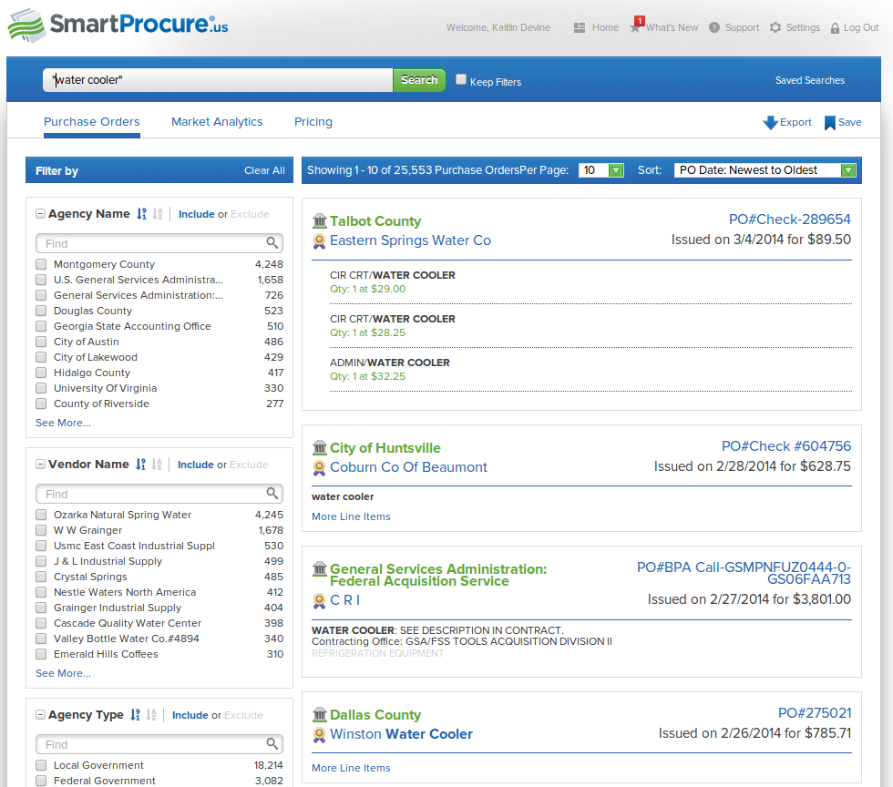

Open Data for
Procurement
Kaitlin Devine
Senior Developer
@kaitlinbdevine
About Us
- Nonprofit & Nonpartisan
- Advocate for government transparency
- Technology focused
About Me
- Software developer
- Federal spending transparency advocate
- Lead our contracting research and analysis group
Some Of Our Contracting Work


What is Open Data?
- Available for use, reuse, and distribution by anyone
- Available in a convenient form and machine readable
- Unencumbered by licensing restrictions
- Does not require registration or identification
^Procurement
...for Procurement
- solicitation and award data
- participants in the process
- disputes, protests and suspensions
- contract performance and execution
Current State of Open Procurement Data
- Often available via a website, not as regularly updated data
- Piecemail, not comprehensive
- Lack of good data on contract performance is widespread
Why Should I Care?
Benefits of Open Procurement Data
- Attract more diverse bidders
- Better access to prices paid
- Real Strategic Sourcing, More contract vehicles available
- Allows for uninhibited, cheap, third party innovation
- distributed oversight by journalists, the public, other contractors
- Easier to identify bad actors
SmartProcure
RFP-EZ

RFP-EZ
- Geared towards small business
- Bids 30% lower than average
- Attracted 270 new businesses

Govini
RFP365

hōrd from Govtribe


Average Number of Employees :
3.5
Solicitation and Tendering Data
- Timely notices as data, not documents
- Using cross-jurisdictional definitions and vocabulary
Open Data Removes the incentive for contractors to capitalize on a lack of information
3 Basic Categories of Procurement Data
- Data on the Process (tenders, RFPs, prices paid)
- Information on the Bidders (company ownership)
- Reports on the execution of a contract (contractor performance, contributing factors for over budget)
resources (links to stuff)
Kaitlin Devine
Senior Developer
kdevine@sunlightfoundation.com
Timely Data
- Ongoing trends can be detected, analyzed
- Detection of fraud is actionable
- Predictable release schedule
- Newsworthy
Complete Data
“Transparency isn’t transparency if you cannot understand the information being presented on a government website.”
Complete Data
- Comes with a robust data dictionary!
- Required fields are reliably present
- Missing data are documented
Comprehensive
- Default mode of spending data should be disclosure.
- Exceptions should be minimal and intuitive

Descriptive
- Category codes helpful, but not a replacement for detailed description of spending
- Context is important!
- Metadata helps with context, allows for aggregation
Interoperable
- Data can reference other data (denormalized), but the reference data must also be accessible
- Leverage existing standards
- spending categories, geographic locations, treasury account symbols --> all have a standard format
Does USASpending Fulfill these parameters?
Let's see what the users have to say...
Quotes:
“The biggest difference between the CFFR and USASpending.gov is stewardship”
“It doesn’t cover all spending (80-82% of CFFR)”
“[Needs] Better documentation for data downloads.”
“Timeliness is a major factor”
“People want to be responsible users of this information, but currently the tools for them to do that don't exist.”
“The site is called USASpending, so a novice could be forgiven for thinking it represents all spending in the USA”
Who Was Surveyed
- Private Contractors
- State and Local Government Policy Analysts
- Non-profits and Oversight Community
- Journalists
 Relatively sophisticated users of this data
Relatively sophisticated users of this data
How They Are Using the Data
- Private consulting/analysis for contractors
- Policy briefs on federal spending
- Communicating federal spending targets to public
- Background research for stories
- Verifying submissions to FSRS
Main Challenges and Barriers to Using USASpending Data
- Incorrect or Lack Of Documentation
- Errors, gaps in the data
- Lack of information about data quality and compliance
- Inability to reliably resolve entities using DUNS
- Support for further questions, information
Consumers of this information can also be producers
Three Easy Pieces
- Documentation
- Information on data quality and compliance
- Dialogue
The Proposal:
Connect the users and producers of this data
Structure
- Roundtable discussion
- After hours social meetups
- Day-long mini-conference
- Development/Documentation sprint
Potential Outcomes
- Knowledge sharing with those most likely to disseminate
- Community driven documentation
- Guides, tutorials, data dictionaries on using the data and the site search
- Tools for users and the USASpending team
- The beginning of an online home for the federal spending data community
- More informed discussions of spending transparency priorities
Potential Discussion Questions
- When to use different downloadable data
- How to link contractors to subcontractors
- What are differences b/w USASpending and FPDS
- How to increase public interest in spending transparency
- How users can submit data cleaning/fixes back to USASpending
- What are requirements for agency reporting, exceptions?
- How the data is generated?
- Differences between the CFFR and FAADS PLUS data